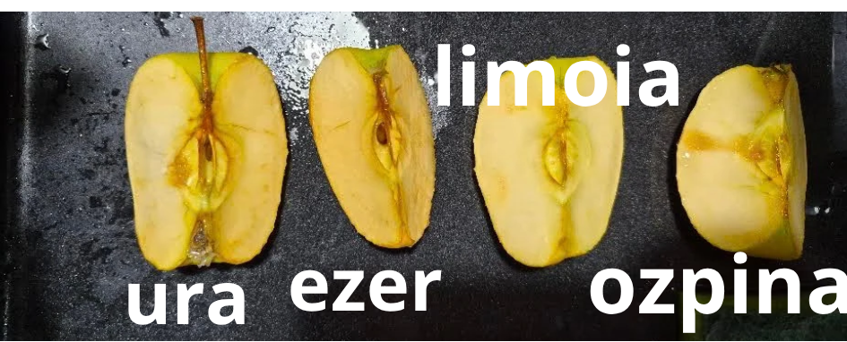

Xabier Mayor Artetxe
26/27
Sagar bat moztu eta aire librean uztean, marroi kolorea hartzen du arineketan oxigenoa sagarra oxidatu egiten duelako.
Zein likido egiten du sagarra ez oxidatzeko?
Limoiaren zukua sagarra ez oxidatzeko balio du. C bitamina daukalako.

Gehien oxidatu zen puxka ezer zeukana izan zen eta gutxien limoiarena. Ozpinaren puxka ez zen asko oxidatu baina limoia daukana goxoago egongo da bestea baino. Ura zeukana ere oxidatu zen. Horren ondorioz gure hipotesia zuzena zen.